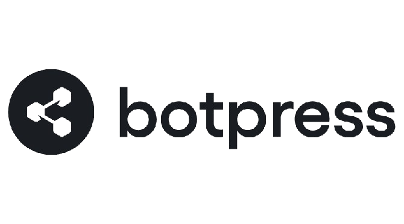
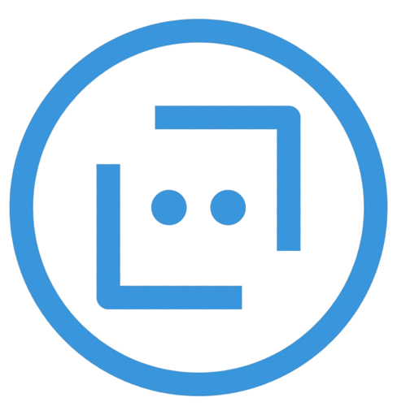
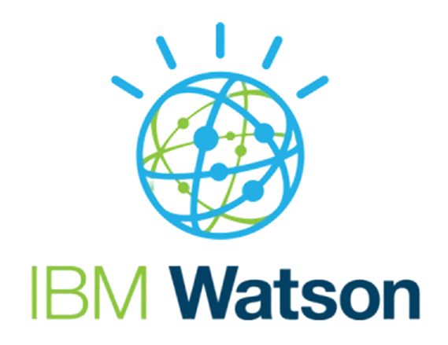

Comparaison des outils de chatbot
| Plateforme | Facilité d'utilisation | Public cible | Points forts | Limites |
|---|---|---|---|---|
| Très facile, pas de codage nécessaire. | Petites entreprises et e-commerce. | Interface intuitive, support client. | Moins flexible pour des solutions complexes. | |
| Dialogflow | Nécessite des compétences en développement. | Développeurs et entreprises avec des besoins NLP avancés. | Puissant moteur NLP, intégration Google Cloud. | Courbe d'apprentissage. |
| Nécessite des compétences en développement. | Développeurs cherchant une personnalisation maximale. | Hautement personnalisable, open-source. | Mise en place initiale complexe. | |
|  Botpress | Interface conviviale mais nécessite des compétences en développement pour des personnalisations avancées. | Développeurs et entreprises cherchant une solution open-source. | Personnalisable, gestion multicanal. | Courbe d'apprentissage pour des fonctionnalités avancées. |
|  Microsoft Bot Framework | Nécessite des compétences techniques avancées. | Développeurs et grandes entreprises. | Flexibilité, intégration Azure, outils puissants. | Peut être coûteux, courbe d'apprentissage. |
| Wit.ai | Facile pour des cas d'utilisation basiques. | Utilisateurs cherchant des intégrations simples avec Facebook. | Gratuit, simple à utiliser. | Moins puissant, personnalisation limitée. |
|  IBM Watson Assistant | Nécessite des compétences en développement pour des intégrations avancées. | Entreprises avec des besoins NLP avancés. | Moteur NLP robuste, outils analytiques. | Coûteux, nécessite des compétences techniques. |
Conclusion
Le choix de l'outil dépendra de vos besoins spécifiques et de votre niveau de compétence technique. Pour des solutions simples et rapides, Tidio ou Wit.ai pourraient être suffisants. Pour des projets plus complexes nécessitant une personnalisation avancée, Rasa, Botpress ou Microsoft Bot Framework seraient plus appropriés. Dialogflow et IBM Watson Assistant offrent un bon compromis entre puissance et facilité d'utilisation, avec des fonctionnalités NLP avancées et une bonne intégration dans des écosystèmes plus larges.